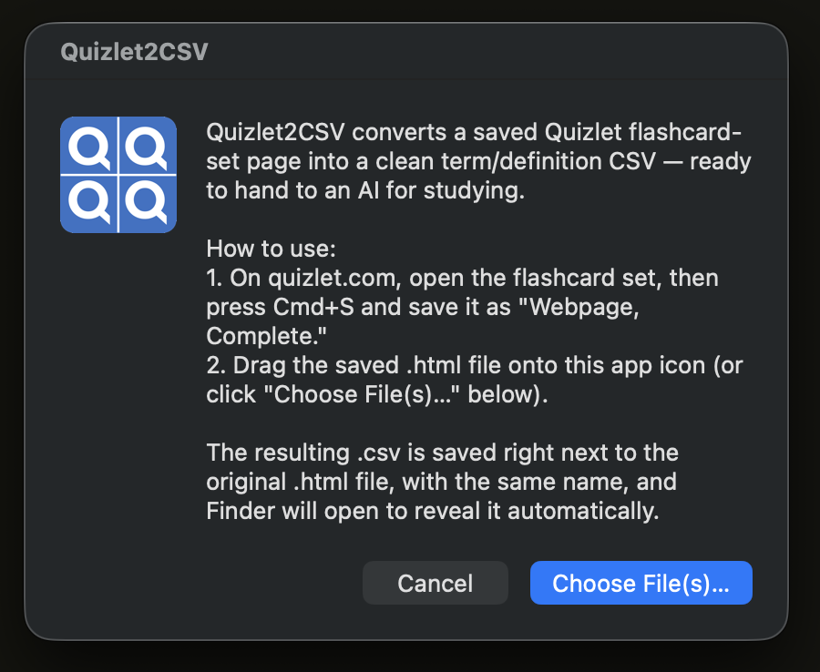
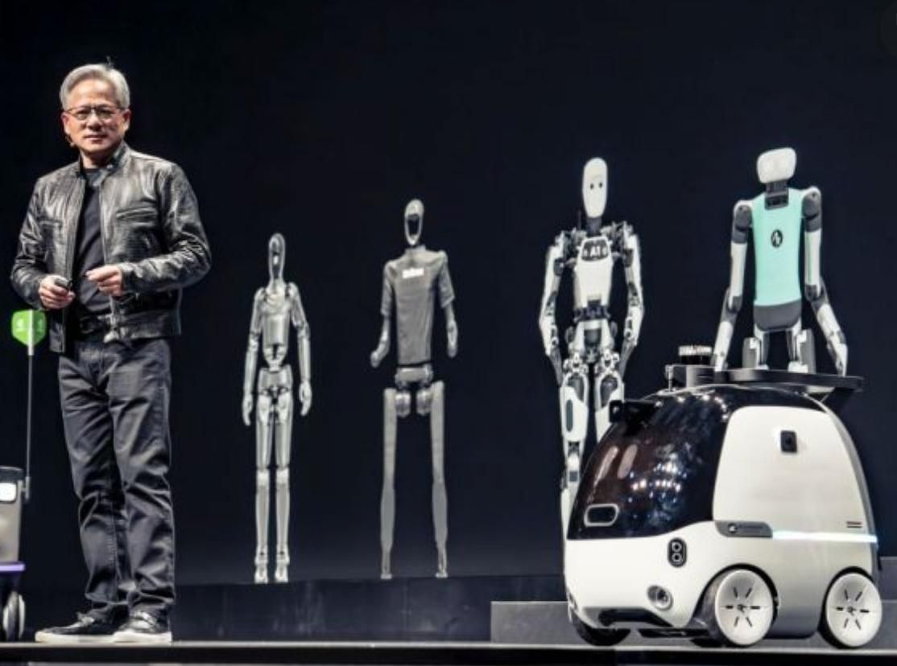
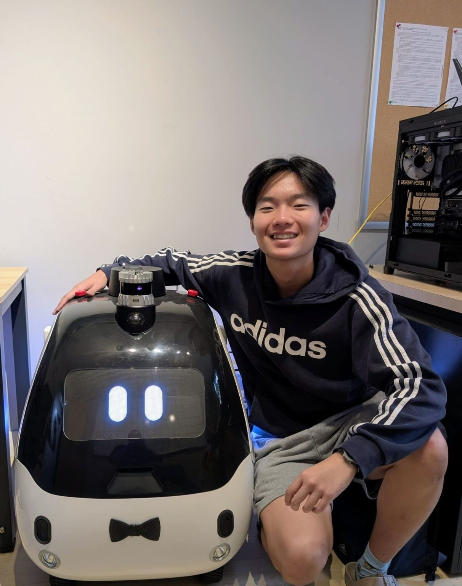

I came up through economics and running a global nonprofit of student peers, not computer science — these days I'm teaching myself to build the technical half of that story: small tools shipped to fix real annoyances, dabblings in robotics, and places where I've had the privilege to tell my story to an audience.
Tools
I built this to stop reading the same funding announcement in five different newsletters. Every morning it scans VC and startup-finance newsletters in my inbox, pulls out every funding round, acquisition, IPO, and leadership move it can find, and drops them — deduplicated and organized — into the live dashboard below. No manual copy-paste, no missed deals, no cost to run. I further configured a Telegram bot to send messages for every deal. No fluff, no fancy images, just information-dense bullets.
1,000+ deals logged since April 2026, running Gemini inference on the free tier.
A drag-and-drop macOS/Windows app that turns a saved Quizlet flashcard page into a clean term/definition CSV — no scraping, no server, nothing leaves your machine. The point isn't the CSV itself; it's getting flashcards into a format an AI can actually study with: fact-checking cards, generating practice exams, and sequencing a study plan.
Built for non-technical classmates in humanities/bio/pre-med tracks, with a README written for people who've never opened a terminal.

Hardware side-build
One of the more fun, artsy things I got to work on as an Operations & GTM intern at dConstruct Robotics. I worked with our Product Design Lead to design, animate, and deploy new facial animations for d.ASH-er, our flagship AMR. The following animations were made in Rive. Pretty exciting to work on a robot that has been on stage with Jensen Huang at GTC 2024 in Taiwan.




Featured in
Panelist, hosted by MUNers Across Borders.
via LinkedIn →Guest speaker representing MUN Impact, presenting on the org's work democratizing the Model UN experience.
via LinkedIn →Open-forum panelist alongside Jaideep Singh Soodan, Mohammed Mostafa, and Defne Yaman.
via LinkedIn →